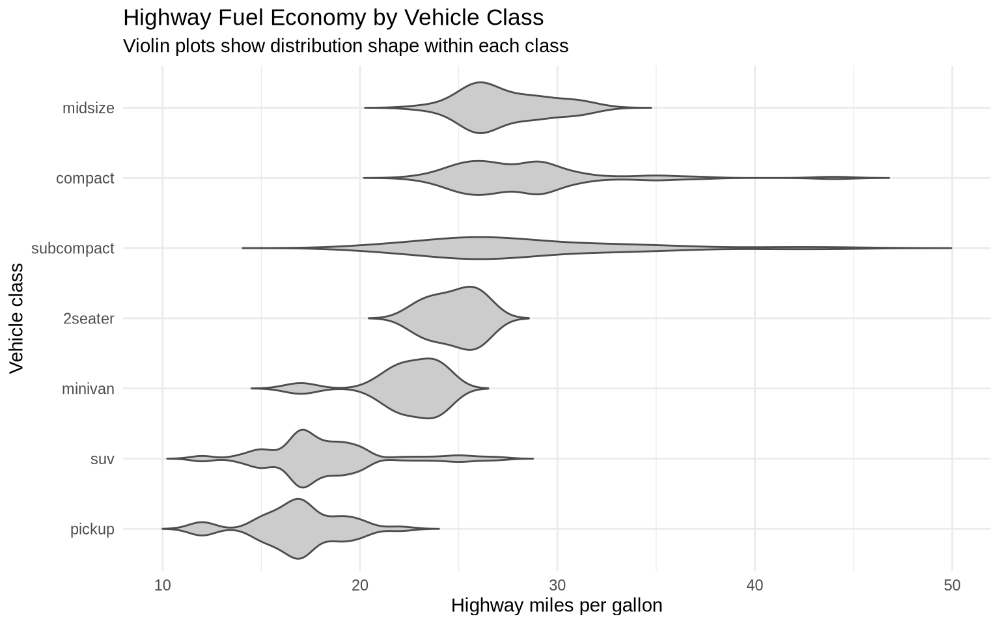
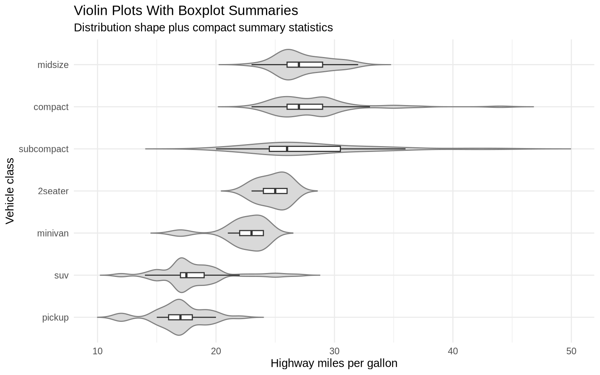
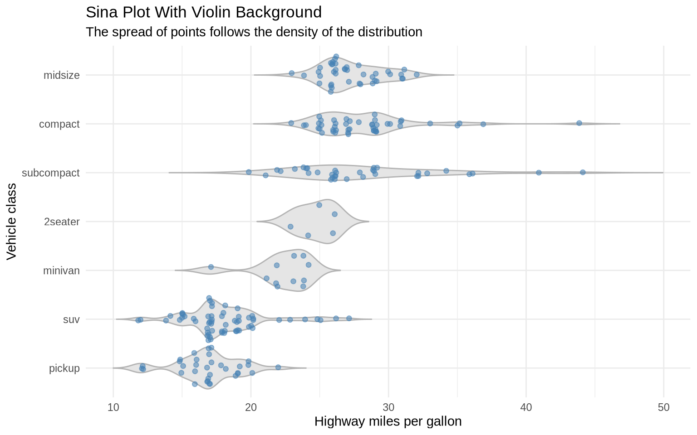
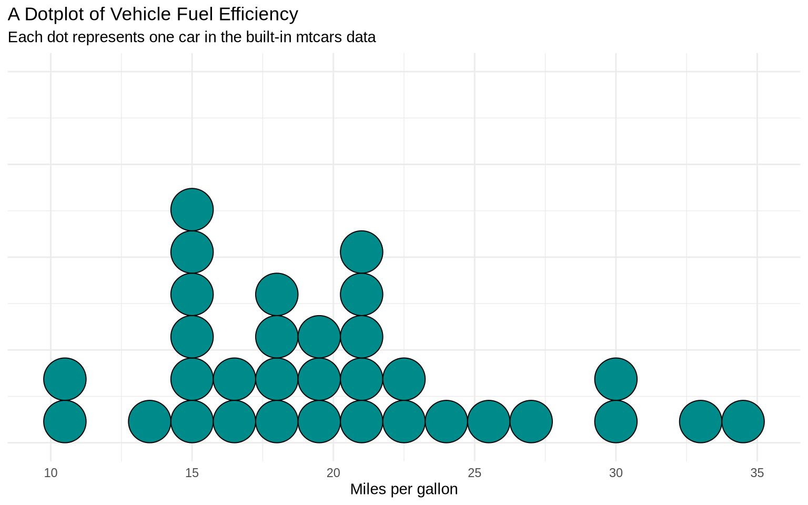
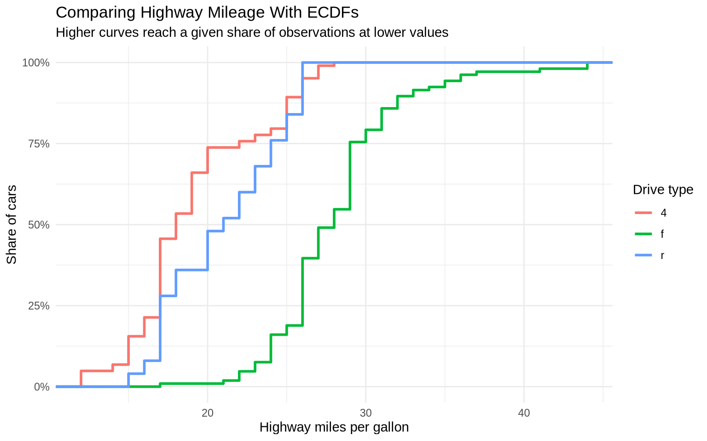
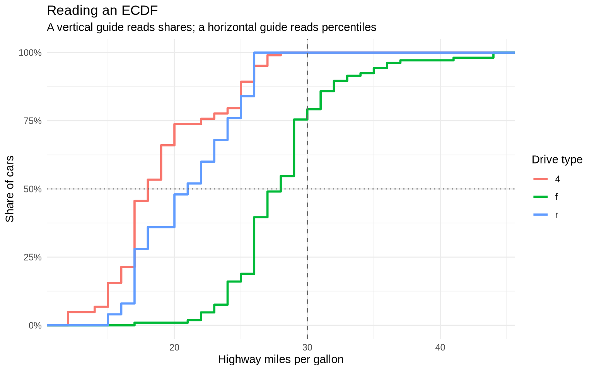

This lesson covers several additional distribution displays:
violin plots, which show distribution shape by group
sina plots, which combine density shape with individual observations
dotplots, which work well when individual observations remain readable
ECDF plots, which compare cumulative distributions
population pyramids, which mirror age distributions for two groups
7.2 Violin Plots
Violin plots compare distributions across groups. A violin plot is like a density plot turned sideways and mirrored. The widest parts show where values are most common. The narrow parts show where values are less common.
ggplot(data = mpg, mapping =aes(x =reorder(class, hwy, FUN = median), y = hwy)) +geom_violin(fill ="gray80", color ="gray30", trim =FALSE) +coord_flip() +labs(title ="Highway Fuel Economy by Vehicle Class",subtitle ="Violin plots show distribution shape within each class",x ="Vehicle class",y ="Highway miles per gallon" ) +theme_minimal()

The violin plot shows more shape than a boxplot. A group can have a long tail, several clusters, or a narrow concentration of values. That information is mostly hidden in a boxplot.
7.3 Violin Plots With Boxplots
We can merge violin plots with boxplots. The violin shows the distribution shape, while the boxplot keeps the median and interquartile range visible.
ggplot(data = mpg, mapping =aes(x =reorder(class, hwy, FUN = median), y = hwy)) +geom_violin(fill ="gray85", color ="gray50", trim =FALSE) +geom_boxplot(width =0.12, outlier.shape =NA, fill ="white") +coord_flip() +labs(title ="Violin Plots With Boxplot Summaries",subtitle ="Distribution shape plus compact summary statistics",x ="Vehicle class",y ="Highway miles per gallon" ) +theme_minimal()

7.4 Sina Plots
A sina plot is another compromise between a violin plot and a jitter plot. The geom_sina() function from the ggforce package spreads points according to the density of the data. Dense parts of the distribution become wider; sparse parts stay narrow.
ggplot(data = mpg, mapping =aes(x =reorder(class, hwy, FUN = median), y = hwy)) +geom_violin(fill ="gray90", color ="gray70", trim =FALSE) +geom_sina(color ="steelblue", alpha =0.55, size =1.6) +coord_flip() +labs(title ="Sina Plot With Violin Background",subtitle ="The spread of points follows the density of the distribution",x ="Vehicle class",y ="Highway miles per gallon" ) +theme_minimal()

The advantage of a sina plot is that it preserves the individual observations while still communicating the shape of the distribution. The disadvantage is that it adds one more specialized geom, so it is most useful when the raw observations are substantively important.
7.5 Dotplots For Small Samples
A dotplot is useful when there are few enough observations that individual dots remain readable. It is a more literal display than a histogram or density plot because each dot represents an observation.
ggplot(data = mtcars, mapping =aes(x = mpg)) +geom_dotplot(binwidth =1.5, method ="histodot", fill ="darkcyan") +labs(title ="A Dotplot of Vehicle Fuel Efficiency",subtitle ="Each dot represents one car in the built-in mtcars data",x ="Miles per gallon",y =NULL ) +theme_minimal() +theme(axis.text.y =element_blank(),axis.ticks.y =element_blank() )

The y-axis is not meaningful in this display because the dots are stacked to avoid overlap. The important information is the horizontal position and clustering of the dots.
7.6 ECDF Plots
An empirical cumulative distribution function, or ECDF, shows the share of observations at or below each value on the x-axis. ECDF plots can be useful when several density curves would overlap too much.
ggplot(data = mpg, mapping =aes(x = hwy, color = drv)) +stat_ecdf(linewidth =1) +scale_y_continuous(labels = percent) +labs(title ="Comparing Highway Mileage With ECDFs",subtitle ="Higher curves reach a given share of observations at lower values",x ="Highway miles per gallon",y ="Share of cars",color ="Drive type" ) +theme_minimal()

An ECDF makes medians and other percentiles easier to compare. For example, the point where a line crosses 50% is the median for that group.
There are two basic ways to read an ECDF:
Pick an x-value and read upward to the curve. The y-value says what share of observations are at or below that x-value.
Pick a y-value and read across to the curve. The x-value says the value at that percentile.
For example, the next chunk calculates two simple readings from the same mpg data. The first reading asks what share of front-wheel-drive cars have highway mileage of 30 MPG or less. The second reading asks for the median highway mileage among front-wheel-drive cars.
The ECDF plot shows the same information visually. At hwy = 30, the front-wheel-drive curve is near the share calculated above. At y = 50%, the x-position of the front-wheel-drive curve is the median.
ggplot(data = mpg, mapping =aes(x = hwy, color = drv)) +stat_ecdf(linewidth =1) +geom_vline(xintercept =30, linetype ="dashed", color ="gray40") +geom_hline(yintercept =0.5, linetype ="dotted", color ="gray40") +scale_y_continuous(labels = percent) +labs(title ="Reading an ECDF",subtitle ="A vertical guide reads shares; a horizontal guide reads percentiles",x ="Highway miles per gallon",y ="Share of cars",color ="Drive type" ) +theme_minimal()

When one ECDF curve is farther to the right, that group tends to have larger values. When one curve rises very quickly, many observations are concentrated in a narrow range. When curves cross, the comparison depends on which part of the distribution is being discussed.
7.7 Population Pyramids
A population pyramid is a mirrored distribution. Age groups are placed on one axis, and two populations are placed on opposite sides of the other axis. The classic version puts men on one side and women on the other.
The apyramid package provides a direct population-pyramid function. age_pyramid() expects an age-group column, a splitting column such as sex, and, for pre-computed data, a count column.
The us_2018 data set contains population counts by age group and gender. The levels() line shows the order of the age groups, which matters because population pyramids should be arranged from youngest to oldest.
The apyramid function can also split each side of the pyramid into stacked categories. The split_by argument still controls the two mirrored sides. The stack_by argument adds another grouping variable inside each side.
The us_ins_2018 data set is stratified by gender and health insurance status. That makes it possible to show age, gender, and insurance status in one compact figure.